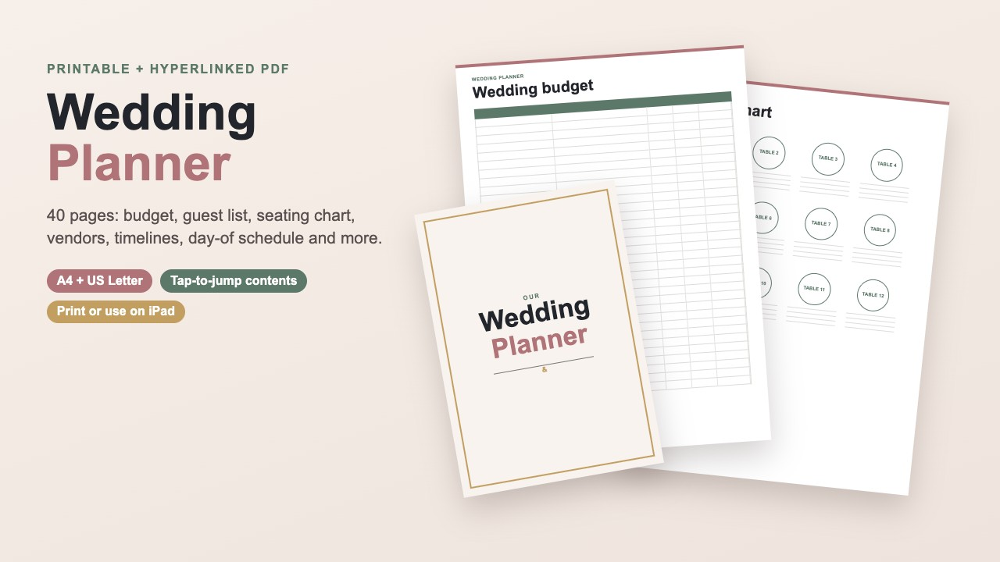
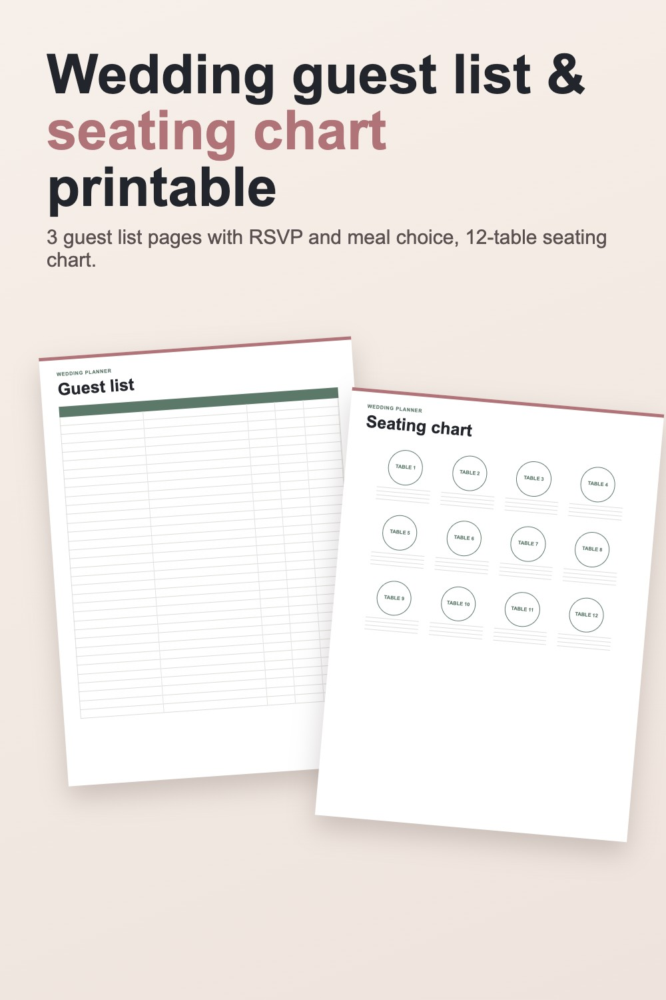

Wedding Planner Printable
40 pages that cover the budget, the guests, the vendors and the big day. Print it, or open it on an iPad and tap the contents to jump to any page.
Get the wedding planner, $9

What's inside
- Plan: overview, our vision, 12-month planning timeline, master to-do list, important dates
- Money: wedding budget (20 categories), payment and deposit tracker, expense log
- Guests: 3 guest list pages with RSVP, meal and table, a 12-table seating chart, guest accommodation
- Vendors: contacts, venue and photographer comparison, catering, flowers and decor, music, cake
- Style: attire, wedding party, hair and makeup schedule
- Events: pre-wedding events, rehearsal dinner, wedding day timeline, ceremony and reception plans, photo shot list, emergency kit
- After: gifts and thank-you notes, honeymoon planner and packing list, name change checklist

How to plan a wedding, step by step
1. Set the budget and the guest count first
These two numbers decide almost everything else: the venue size, the catering cost and the style of the day. Write both on the overview page before you book anything.
2. Book the venue and the big vendors 9 to 12 months out
Venues, photographers and caterers book up first. Use the comparison pages to compare three options side by side before you pay a deposit.
3. Track every deposit and due date
Most vendors take a deposit and a final balance. The payment tracker shows what is paid and what is still due, so nothing is missed in the last busy weeks.
4. Finish the guest list and seating chart a month before
Collect RSVPs and meal choices on the guest list, then place everyone on the seating chart and send the final count to the caterer.
5. Write a wedding day timeline and share it
A simple timeline from hair and makeup to the send-off keeps the photographer, the venue and the wedding party on the same page.
Details
- Two PDFs: A4 and US Letter
- Hyperlinked contents for GoodNotes, Notability or any PDF reader
- Instant download, for personal use
Get the wedding planner
Want to try it first? Download the free 12-month wedding checklist. All products: printables and templates.